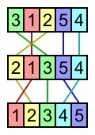
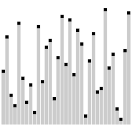

Aluno(s): Artur Tabosa, Enzo Santiago, Labelle Cândido e Rafael Diniz
FUNCIONAMENTO:
O algoritmo Comb sort (ou Combo sort ou ainda algoritmo/classificação do pente) é um algoritmo de ordenação relativamente simples, e faz parte da família de algoritmos de ordenação por troca. Foi desenvolvido em 1980 por Wlodzimierz Dobosiewicz e Artur Borowy. Mais tarde, foi redescoberto (e dado o nome de "Comb Sort") e popularizado por Stephen Lacey e Richard Box em um artigo publicado na revista Byte em Abril de 1991. O Comb sort melhora o Bubble sort, rivaliza com algoritmos como o Quicksort, e encolhe cerca de 1,3x. A ideia básica é eliminar as "tartarugas" ou pequenos valores próximos do final da lista, já que em um bubble sort estes retardam a classificação tremendamente. "Coelhos" ou grandes valores em torno do início da lista, não representam um problema no bubble sort.
O Comb Sort é um algoritmo de classificação que foi projetado para melhorar o desempenho do Bubble Sort, especialmente em casos onde o conjunto de dados não está completamente desorganizado. No entanto, embora o Comb Sort seja um algoritmo de classificação relativamente simples e fácil de entender, seu desempenho pode não ser o melhor em todos os cenários. A performance do Comb Sort pode ser resumida da seguinte forma: Complexidade de Tempo: O pior caso do Comb Sort tem uma complexidade de tempo de O(n^2), que é semelhante ao Bubble Sort, tornando-o ineficiente para grandes conjuntos de dados não ordenados. No entanto, em média, o Comb Sort é mais eficiente que o Bubble Sort, principalmente quando há poucas inversões no conjunto de dados. Melhorias: O Comb Sort melhorou o desempenho do Bubble Sort ao introduzir um "fator de encolhimento" que reduz o tamanho do passo usado para comparações e trocas à medida que o algoritmo avança. Isso ajuda a eliminar pequenos valores no final da lista mais rapidamente do que o Bubble Sort. Casos específicos: O Comb Sort é geralmente mais eficiente do que o Bubble Sort, mas ainda é superado por algoritmos de classificação mais avançados, como Quick Sort, Merge Sort e até mesmo o Tim Sort (que é uma versão híbrida do Merge Sort e do Ordenação por Inserção). Portanto, em cenários onde o desempenho é crítico, outros algoritmos são preferíveis. Espaço de Memória: O Comb Sort é um algoritmo in-place, o que significa que ele não requer memória adicional para armazenar dados temporariamente, tornando-o eficiente em termos de uso de memória. Em resumo, o Comb Sort é um algoritmo de classificação que oferece uma melhoria sobre o Bubble Sort em termos de desempenho médio, mas ainda é superado por algoritmos mais avançados em termos de eficiência e rapidez em cenários com grandes conjuntos de dados desordenados. Portanto, sua utilização pode ser adequada para tarefas simples de classificação, mas em situações onde o desempenho é crítico, outros algoritmos de classificação são geralmente preferíveis.
| REPRESENTAÇÃO GRÁFICA | ANIMAÇÃO | VÍDEO |
|  |  |
VANTAGENS:
DESVANTAGENS:
IMPLEMENTAÇÃO: